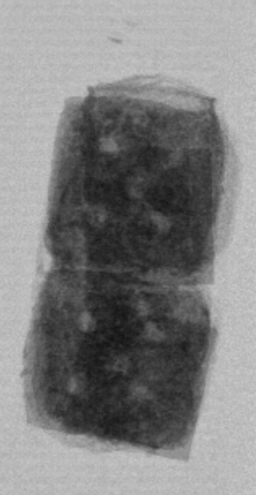
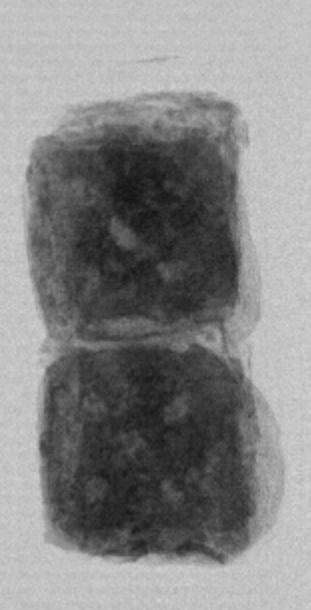
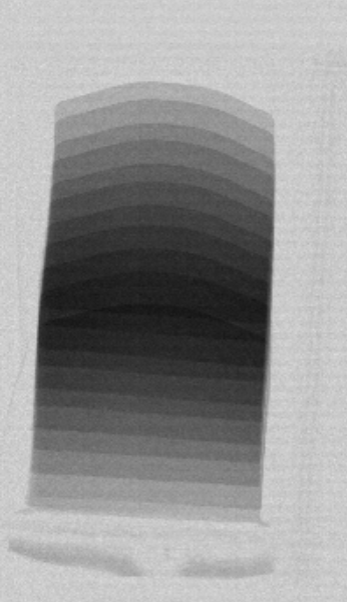
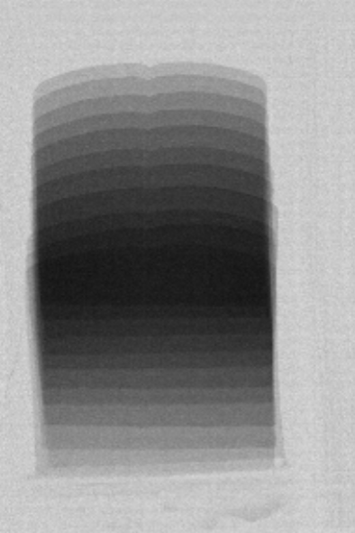

Case study
AI product-in-seal detection at production speed.
An anonymized packaged-food application where GreyscaleAI used AI image analysis to identify subtle product-in-seal events that traditional inspection approaches can miss.
200 fpm
Real production rejects shown in the source application spotlight.
QA
Focused on seal integrity, rework, complaints, and hold-backs.
Pouches, bags, trays
Package formats where seal contamination can be subtle.
-
Challenge
Product-in-seal events were expensive and frustrating because the difference between a clean seal and contamination could be subtle, inconsistent, and difficult to catch at higher line speeds. -
Solution
GreyscaleAI applied machine-learning models trained on real production imagery to evaluate the seal region with high granularity instead of relying only on fixed thresholds. -
Outcome
The application spotlight reports far fewer missed seals, fewer customer complaints and hold-backs, dramatically reduced rework and labor, and stable detection across shifts and products. -
Why it matters
QA leaders get a more consistent way to protect seal quality while operations teams spend less time chasing avoidable rework and customer-impacting defects.




Related pages